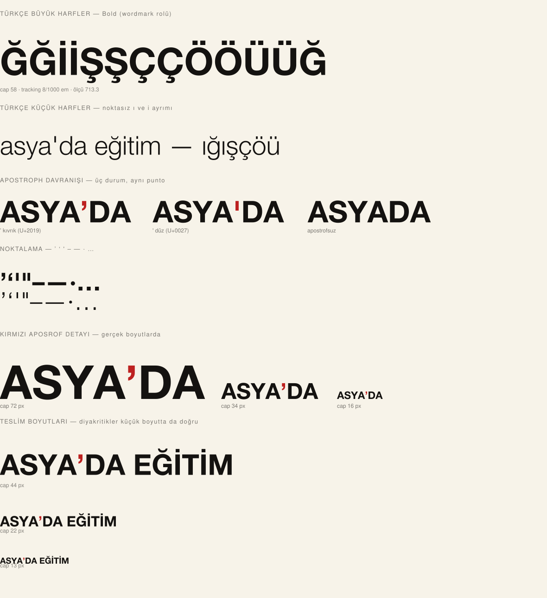

Asya'da Eğitim · tek tipografi yönü, beş yapısal dizilim
Tüm varyantlar aynı yüzü kullanır: Helvetica Neue, Türkçe satır Bold, İngilizce satır Light (geniş harf aralığı), ortak ölçü, kırmızı apostrof, kilitli mühür.
| Öğe | Değer | Neden |
|---|---|---|
| Yüz | Helvetica Neue | Neo-grotesk, çağdaş, temiz; Türkçe için tam kapsamlı |
| Türkçe satır | Bold · uppercase | Kelimenin taşıdığı ağırlık |
| İngilizce satır | Light · uppercase · geniş aralık | İkincil, ama ince olması ezici değil — ayrıntılı |
| Dikey ritim | satır aralığı 1.46 · EN düşüşü 0.70 | Türkçe büyük harf yüksekliğinin katları — her varyantta optik olarak aynı |
| Apostrof | ’ U+2019 · #BD2120 | Referansta tek renk aksanı; markanın kendi kırmızısı |
| Kırmızı | #BD2120 | Mührün kırmızısıyla aynı — iki kırmızı yok |
Referansın asıl davranışı taklit edildi: her satır ortak bir ölçüye gerekçelendirilir, her satır o ölçü için kendi harf aralığını bulur. Bu yüzden ASYA’DA sık, EĞİTİM açık, EDUCATION IN ASIA çok açık set eder — üçü de tam olarak aynı genişlikte.

Gerçek font konturlarından çizildi — <text> etiketi kullanılmadı. Ğ Ğ İ İ Ş Ş Ç Ç Ö Ö Ü Ü ve küçük karşılıkları ile noktasız ı / i ayrımı üç ağırlıkta doğrulandı. 13 px büyük harf yüksekliğinde diyakritikler hâlâ okunuyor.
Her kart: büyük gösterim · açık zemin · koyu zemin · küçük boyutlar · kullanım örneği · ölçüler.
| ID | Varyant | Hizalama | Satır kırılması | Ölçü | TR büyük harf / ölçü | EN / TR | Mühür / TR cap | En-boy | Min genişlik |
|---|
fill özniteliklerini değiştirir: alan #F7F3E9, işaret #141210 olur (onaylı mono-paper varyantı). Kanonik geometri — d, x, y, width, height, rx — kilitli dosyayla bayt bayt aynıdır. Hiçbir yol, eğri veya ölçü değiştirilmedi.
| Varyant | Açık zemin | Koyu / mono | Geometri farkı |
|---|---|---|---|
| — | |||
| Varyant | Min genişlik | Min yükseklik | Nerede | Alt sınırın altında |
|---|---|---|---|---|
| P-01 | 170 px | 190 px | Kurumsal belge, broşür kapak, imza bloğu | H-02'ye geç |
| H-02 | 250 px | 87 px | Web header, e-posta imzası, antet | C-03'e geç |
| C-03 | 165 px | 68 px | Dar yerleşim: altbilgi, sıkışık şerit, form | D-04'e geç |
| D-04 | 110 px | 80 px | Avatar, favicon rozeti, küçük UI, damga | Yalnız mühür (kanonik SVG) |
| F-05 | 300 px | 105 px | Resmi belge, sözleşme, diploma, sertifika | H-02'ye geç |
Bu tahmin değil, ölçüm. Tek satırlık Türkçe ölçü 13 karakter; İngilizce satır 17 karakter. Ortak ölçüye gerekçelenmesi için ya +940/1000 em harf aralığı gerekiyor (aşırı hava gibi görünüyor) ya da İngilizce 0.48 büyük harf yüksekliğine çıkıyor (TR/EN hiyerarşisi çöküyor). İkisinin de küçük boyutta sonucu gri bulanıklık. Bu yüzden D-04 tek dilli küçük kullanım kilididir; 200 px üzerinde iki dilli kilitler devreye girer. Bu bir karar noktasıdır — onay bekliyor.
8f5d46f0302c4cc7e3765d3bfce9445f842dbd92f1e0f8fbe99f9f509c77e11a